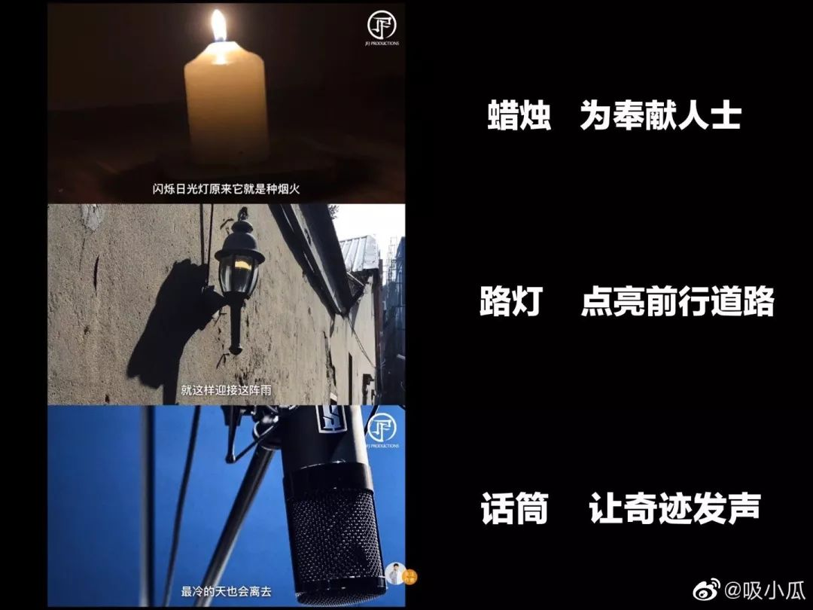
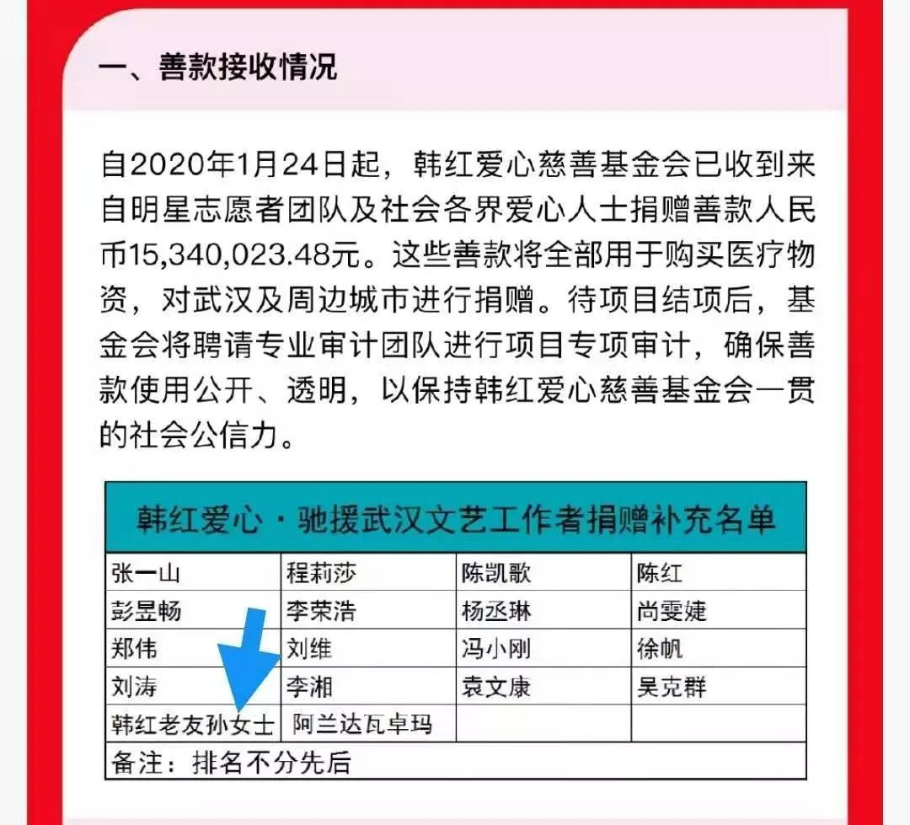

“收留”回不了家的武汉人
原文链接 备份链接 *************▲************* 四川省巴中市巴州区，一辆鄂A车牌（武汉）轿车的车窗上，贴着红岩社区加盖公章的证明，称车主无感冒发烧现象，且正在家自行隔离。 （杜茂林/图） 全文共*4201*字， …

没有被禁锢的城，只有不离开的爱。
文 | 林铭豪 陈嘉玲 崔旭蕾 编辑 | 沈小山
“stay with you
等待着日出
不想说多累，多辛苦。”
——《STAY WITH YOU》歌词
28日，歌手林俊杰（JJ）在微博上发布了自己作曲的新歌MV《STAY WITH YOU》，并配文“就算再艰难，爱不会离开，I will stay with you”。
这条微博到今天已有超过55万次转发、174万个点赞。在目前全国各地仍聚焦抗击新型冠状病毒肺炎的时候，林俊杰的新歌能收获如此热度，除了自身影响力，更关键的还是这首歌本身为疫情而做，林俊杰还在微博中特地@人民日报。
《STAY WITH YOU》的作词人、歌手孙燕姿在微博留言说，这首新歌从策划到完成不过数天时间，是林俊杰为“致敬前线所有人员”而作。而在此前网络上还一度出现有人质疑林俊杰作为公众人物并未就疫情发声，新歌一经推出，被“暖到”的网友惊叹“不愧是你（林俊杰）”。
“信仰，是我最大的力量”
这其实不是林俊杰第一次为重大事件写歌，2008年汶川地震、2009年台湾88风灾、2015年台湾八仙尘爆事故期间，林俊杰分别写了《爱与希望》、《妈妈的娜鲁娃》、《I pray for you》三首歌，借此表达自己的祝福与鼓励，在华语音乐界传为佳话。
从1996年开始正式踏足音乐界，林俊杰出道至今已有20余年时间，凭借其过人的音乐才华及扎实的唱功被称为“行走的CD”，成为与五月天、周杰伦一样在两岸三地都极具影响力的90年代新生台湾音乐人。在90年代崭露头角，尔后逐渐成长为台湾乃至华语流行音乐界代表人物的歌手在唱作上都具有同质化的特点：敢于创新、出道历程曲折、音乐精神正向、两岸联结密切，而林俊杰无疑是拥有这些特性的代表歌手。但影响林俊杰这种关切社会的情怀的，也离不开其信仰。
林俊杰16岁便信仰基督教，2007年成立的个人工作室“JFJ”即取“Just For Jesus”（只为耶稣）的意思。在忠实于自己的音乐道路上，林俊杰也毫不掩饰个人信仰带给他的精神力量，他的饰品中总有十字架的影子、写下了歌曲《圣所》、还在2018年开始了名为“圣所”的巡回演唱会。在这次为抗击疫情而做的新MV中，也出现了他进行祷告以及“圣所”演唱会湖北场时天空突显彩虹的画面，这样的用心既是林俊杰对自身信仰和价值的表达，也是其在用信仰为武汉加油。


（MV解读 图源：微博用户@吸小瓜）
“她的爱从未离开”
林俊杰新歌发布的填词一栏，映入眼帘的是孙燕姿的名字。在微博评论区里，她说：“Stay With You是我们的一份心意。谢谢你们，辛苦了”。没有空喊口号，孙燕姿在无声无息地传递支持与爱。细细品味歌词，细腻的情感和真挚的关怀倾注在每一个字里行间，不必太多言语，寥寥数字已足够直击人心。在这个被无数疫情的新闻刷屏、充斥的“寒冬”，无疑如春风化雨般为紧紧揪着心的人们送去了一丝安慰。

然而，她做的事还不止如此，匿名默默地为武汉捐款——但是“韩红好友孙女士”这个名字还是让眼尖的网友们一下子就发现了她。就这样，在我们看不到的角落，她安静地用爱发电。在转发募款微博时，孙燕姿写下这样一句话：“善良的人最酷”。看似平淡无奇的一句，实则包裹着无数滚烫的善意。
作为爱心大使关注留守儿童问题、参与家扶基金会的公益活动、举办慈善演出等，孙燕姿身体力行地助力公益。才情出众只是她身上众多的闪光点之一，秉持着一颗有温度的心，这份双箭头的爱让众多的粉丝追随了这么多年。
“音乐传递的力量”
用音乐在一代人的青春里印下符号，优质偶像这个称号林俊杰和孙燕姿可以说当之无愧。
作为歌手，林俊杰也曾数度面对事业的低谷，他对此说过：“向上帝祷告，把重担交给上帝，信仰就是我最大的力量。”这份信仰在林俊杰身上是带有神圣色彩的，当他再通过音乐传达给听众和社会时则成为勉励大众对困难和艰辛的不屈奋斗的精神力量。
没有炒作，没有绯闻。孙燕姿在华语乐坛的“长青”是用作品换来的。九十年代末新世纪初，在时代与新潮流相碰撞的境遇下，充满张力和生命力的音乐弥足珍贵。而孙燕姿，正是凭借着独特的声线和朝气蓬勃的姿态走出了自己的风格。《逆光》这首歌里写到：“我不要困难把我们挤散／面对希望，逆着光，感觉爱存在的地方。”这不仅仅是形容爱情，世间之事大都如此。众多脍炙人口、流传经典的歌曲，折射的是人生态度。浅吟低唱，让音乐传递的力量透过阴霾，拨云见日。
为什么在公共资源竞争激烈的当下，林俊杰和孙燕姿这首新歌仍能掀起转发50w+，MV播放量5000w+的涟漪呢？
往大层面看，这份音乐人对社会大众的情怀和精神是华语音乐最宝贵的内核之一。1986年，罗大佑等一众歌手为效仿《We are the word》形式推出了影响数代人回忆的公益大合唱《明天会更好》；2003年非典期间，陶喆、王力宏等当时的新一代歌手又齐心唱出了动人的《手牵手》，而如今林俊杰和孙燕姿一首《STAY WITH YOU》再次唤起听众对华语音乐正面能量的记忆：坚信苦难终将过去，我们一起相伴，这是属于华语音乐人和受众的共同信仰。
公众人物的影响力与传播度巨大，其一言一行都在潜移默化地作用于大众。公众人物的发声是鼓舞，是一针能量剂。这首歌就是雪中的那点炭，也许微不足道，可无法否认它星星点点的火热。自新型冠状病毒肺炎的疫情发生以来，看着实时数据上不断跳动上涨的一个个冰冷数字，人们似乎渐渐感到麻木。
但当新歌发布后，有网友说，听见JJ那句“长长的黑夜它到底还暗淡多久”幽幽地传送至耳边，瞬间泪目。千言万语化成一句stay with you，联结的是无数不顾自身安危冲锋在第一线的医护工作者们，联结的是积聚力量协调物资运送的志愿者们，联结的是为了保持社会正常运转而牺牲小我的服务者们，联结的是无数抱着手机时刻刷疫情动态的屏幕前的每一个你。每一个小小的我们，都紧紧站在一起，纵使天大的难关，我们都携手共渡。
就像mv末尾出现的那副海报：“没有被禁锢的城，只有不离开的爱”，最冷的天终会离去，We’ll stay with you。


（MV解读 图源：微博用户@吸小瓜）
来源｜南都周刊
END
欢迎分享到朋友圈，如想取得授权请邮件：newmedia@nbweekly.com。如果想找到小南，可以在后台回复「小南」试试看哦~
原文链接 备份链接 *************▲************* 四川省巴中市巴州区，一辆鄂A车牌（武汉）轿车的车窗上，贴着红岩社区加盖公章的证明，称车主无感冒发烧现象，且正在家自行隔离。 （杜茂林/图） 全文共*4201*字， …
原文链接 备份链接 据相关数据统计，春节前，有近500万人离开武汉，他们中有近30%的人离开湖北，他们或出差、或进行计划许久的旅行，或回家过年，但伴随着疫情的加剧，他们成了一群「不被欢迎的人」。 一位武汉的小学老师已经连续三年去厦门过年， …
原文链接 备份链接 这段时间，除了关于疫情本身的讨论，一些新的话题不断加入。单读征文今天的来信，来自一位选择离开家乡的武汉人。武汉人在外省的处境令人堪忧，从直面病毒的恐慌，到遭遇歧视的愤懑，武汉人不仅是这场疫情中最直接的受害者，还成为后续 …
原文链接 备份链接 “如果再征召，你就报名，争取加入第二支队伍。我结束隔离后，也会加入心理援助队伍。你去，我也去。他们不能来，我们过去！” 配图 | 关斌斌 征 稿 从2019年12月8日首例武汉新型冠状病毒肺炎患者出现，到2020年1 …
原文链接 备份链接 当上门拜年的人扑空、救护车里的医护人员被迫下车清理路障、村民风声鹤唳草木皆兵，“封村”政策执行的粗放性又不免被摆到台面上来 洛阳南村小区门口悬挂着横幅 / 受访者 供图 文 |《财经》记者 王静仪 王斌斌 特约撰稿 杨 …